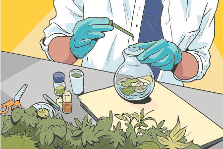

É relativamente comum identificar atividade anti-inflamatória em plantas medicinais, considerando que todas elas contêm muitas substâncias químicas em sua composição e que classes de compostos comuns às plantas, como flavonoides, procianidinas e saponinas, costumam quase sempre exercer alguma atividade anti-inflamatória. Contudo, a maioria não dispõe de potência farmacológica para ser usada com esse propósito. O conhecimento milenar, acumulado ao longo dos anos, selecionou aquelas que possuem potencial para esse emprego clínico.
Plantas empregadas com intuito de exercer atividades anti-inflamatórias são conhecidas em todos os sistemas etnomédicos, considerando que dor e inflamação são sintomas muito comuns. Portanto, trata-se de um grupo amplo de opções, entretanto, foram abordadas apenas aquelas que preenchem os critérios definidos para este curso.
